Цель: создать сайт-визитку для некоммерческой организации:
- отображать новости по рубрикам, подрубрикам
- выводить календарь событий
- искать материалы по сайту
- сформировать подписку на актуальные новости
- получать обратную связь от посетителей сайта
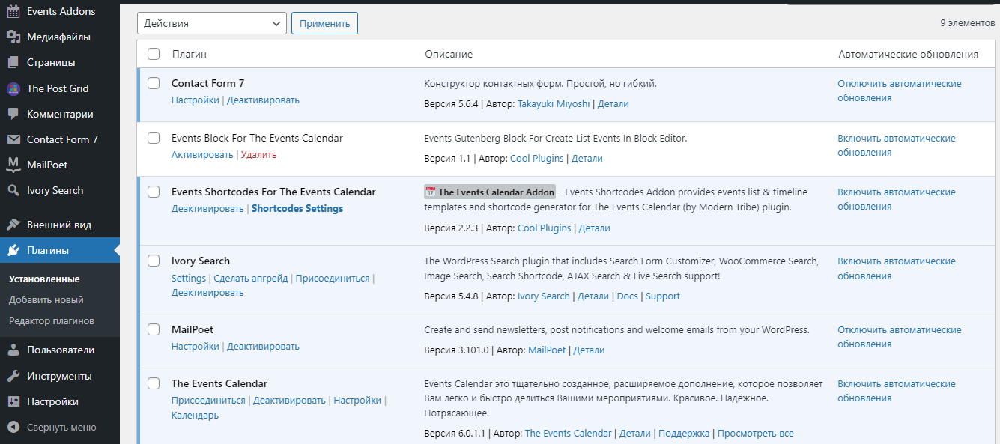Contact Form 7 - форма обратной связи
Events Block For The Events Calendar - формирование календаря событий
Events Shortcodes For The Events Calendar - вывод календаря в необходимой по дизайну позиции
Ivory Search - поиск по сайту
MailPoet - рассылка для сайта
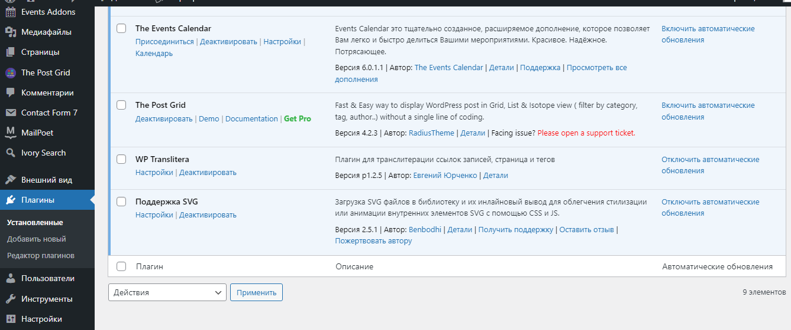The Post Grid - вывод записей по рубрикам, подрубрикам
WP Translitera - перевод русских названий записей в url на латиницу
Цель: создать сайт-визитку для салона красоты со следующим функционалом
- онлайн-запись на услуги
- заказать звонок обратной связи
- отслеживать результаты яндекс-рекламы
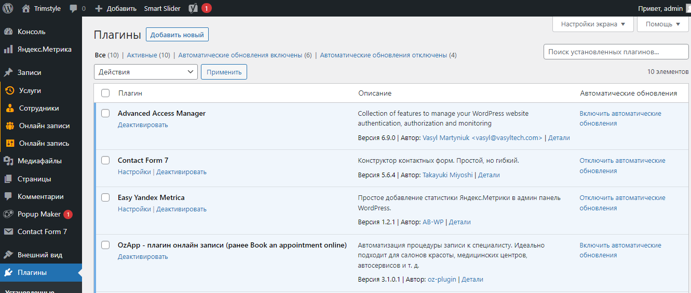Contact Form 7 - форма обратной связи
Easy Yandex Metrica - отслеживание результатов яндекс-рекламы
OzApp - плагин онлайн-записи + формирование графика работ для сотрудников
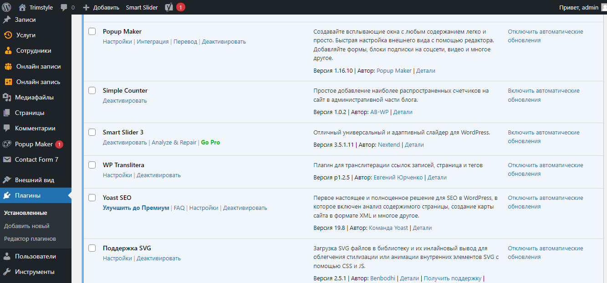Popup Maker - создание вслывающих окон для контактной формы
Smart Slider 3 - создание слайдов
Yoast SEO - заполнение описания сайта для SEO
Цель: создать сайт-каталог и внести его следующий функционал
- возможность добавлять товары в каталог
- формировать список избранных товаров
- выводить на печать этот список
- репостить понравившийся товар
- добавлять/удалять места продаж (с клиенской стороны фильтровать список магазинов по регионам
- осуществлять поиск по указаным категориям и страницам сайта
- добавлять видео в обзор товара
Цели бы достигнуты при помощи следующих плагинов и скриптов
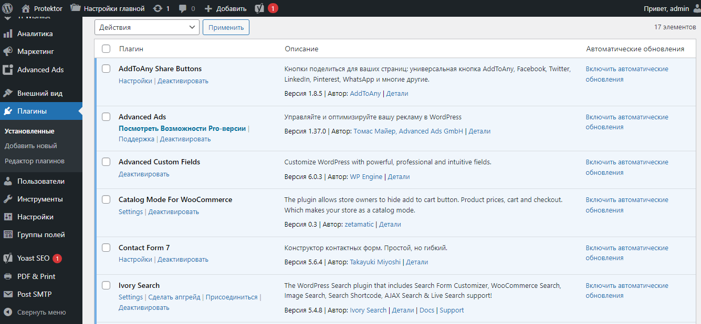AddToAny Share Buttons - осуществление репостов товаров
Advanced Ads - вывод рекламных баннеров
Advanced Custom Fields - формирование полей для возможности заполнять новые пункты реализации товаров
Catalog Mode For WooCommerce - адаптация интернет-магазина под каталог
Contact Form 7 - форма обратной связи
Ivory Search - поиск по сайту с ограничением выбранных категорий
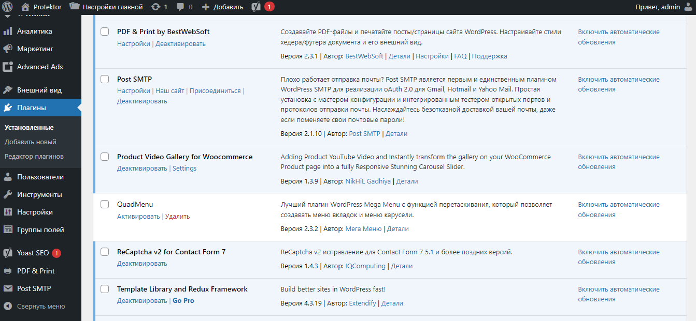PDF & Print by BestWebSoft - создание pgf файла с товарами из списка избранного и дальнейшая его печать
Product Video Gallery for Woocommerce - возможность добавления видео в обзор товара
ReCaptcha v2 for Contact Form 7 - защита от спама
Template Library and Redux Framework - была сформирована целая пользовательская вкладка в админ-панели для редактирования информации на главной странице. Ниже подробнее
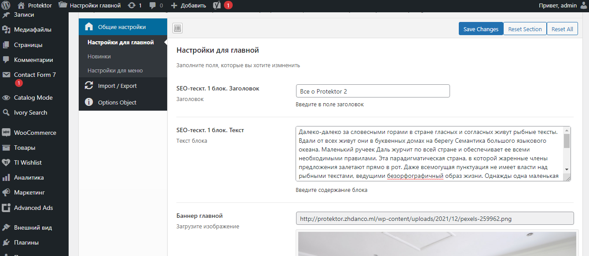 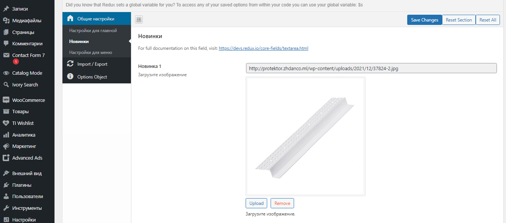 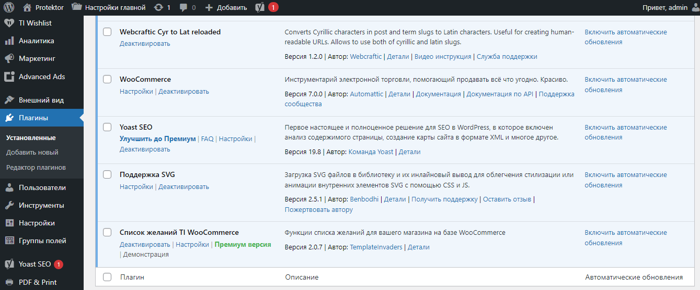WooCommerce - создание интернет-магазина, на базе которого создался сайт-каталог
Yoast SEO - для настройки и оптимизации url
Список желаний TI WooCommerce - формирование списка избранное
У клиента было особое пожелание в создании меню сайта.
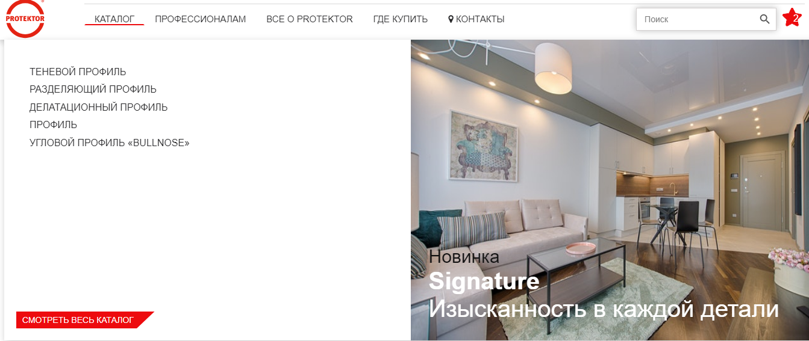 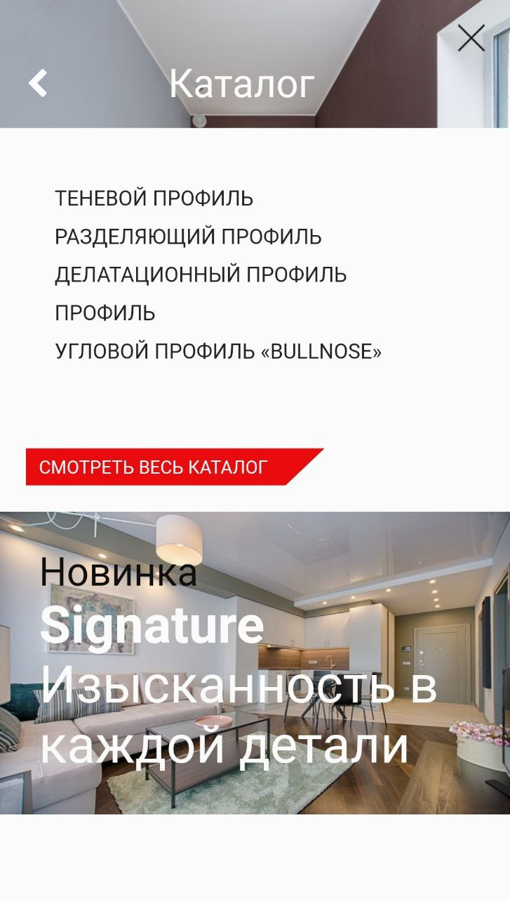Меню не просто должно было по-разному отображаться на мобильном устройстве и десктопе, но также клиент должен был иметь возможность менять изображение, тексты и дополнительную ссылку на страницу сайта. Само меню было реализовано при помощи JavaScript + Jquery, а редактирование полей с помощью плагина Template Library and Redux Framework
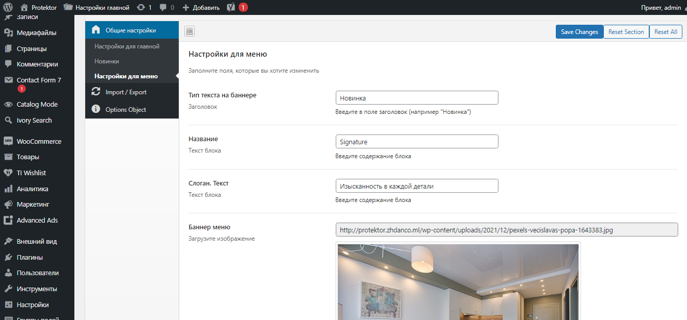